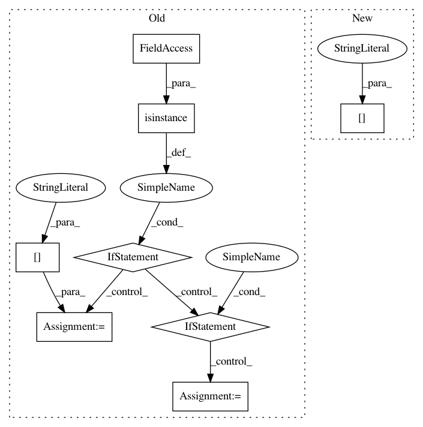

088b10a9b6621472af54635e761bda0dd775836f,Orange/classification/majority.py,MajorityLearner,__call__,#MajorityLearner#Any#,8
Before Change
"Majority learner does not support multiple classes")
class_var = data.domain.class_var
y = data.Y
if isinstance(data.domain.class_var, data.ContinuousVariable):
return DefaultClassifier(data.domain, bn.nanmedian(y))
else:
n_values = data.domain.class_var.values()
if y.dtype != int:
nans = y.isnan()
y = np.array(y, dtype=int)
y[nans] = len(n_values)
if data.W.shape[-1] == 0:
distr = np.bincount(y, minlength=n_values)
else:
distr = np.bincount(y, data.W, minlength=n_values)
distr = np.asarray(distr, np.float)[:n_values]
return DefaultClassifier(data.domain, distr=distr)
class DefaultClassifier(classification.Classifier):
def __init__(self, value=None, distr=None):
if value is None:
mx = np.max(distr)
After Change
assert np.issubdtype(y.dtype, int)
n_values = data.domain.class_var.values()
dist = np.bincount(y, w, minlength=n_values).astype(float)[:n_values]
N = sum(dist)
if N > 0:
dist /= sum(dist)
else:
In pattern: SUPERPATTERN
Frequency: 3
Non-data size: 8
Instances
Project Name: biolab/orange3
Commit Name: 088b10a9b6621472af54635e761bda0dd775836f
Time: 2012-09-26
Author: janez.demsar@fri.uni-lj.si
File Name: Orange/classification/majority.py
Class Name: MajorityLearner
Method Name: __call__
Project Name: openml/openml-python
Commit Name: 7d452c3712b506f4e43153f38d455e13858b6c50
Time: 2017-05-22
Author: feurerm@informatik.uni-freiburg.de
File Name: openml/runs/functions.py
Class Name:
Method Name: _create_run_from_xml
Project Name: dask/distributed
Commit Name: face9e8273ef755aa658d89d8f3dd80b1c02cd7c
Time: 2019-09-20
Author: madsbk@gmail.com
File Name: distributed/protocol/numba.py
Class Name:
Method Name: deserialize_numba_ndarray